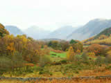
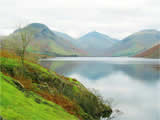
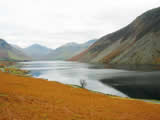
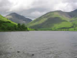
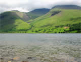
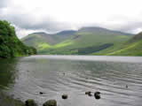
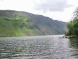
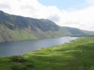
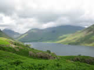

Wast Water. This, the deepest of the lakes at 260 feet, is overlooked by the impressive heights of Great Gable, Scafell Pike and Red Pike. Screes, (a mass of loose rocks and stones) mark the mountainside, descending 2000 feet before disappearing into the cold waters below.
A narrow winding road and a level footpath follow the waters edge along the full length. Beyond, stands the scattering of houses, Inn and the compact St. Olafs Church of Wasdale. The church, said to be the third smallest in England, contains a stained-glass window with an inscription in memory of the Fell and Rock Climbers who were killed in service during WWI.
Wasdale was home to the much celebrated local man, Will Ritson, a former keeper of the Inn. Not only was he well known as a formidable wrestler and climber, but for his wit and ability to “spin a yarn”. The colourful story telling eventually developed in to a contest to find the biggest liar in England. The event continues to this day.
This is an area much loved by walkers and climbers, and sub-aqua clubs whose members explore the 200 + feet depths. Another story of the area suggests that a well stocked gnome-garden has been built on the lake bed. Make of that what you will!
Wasdale’s Autumn Show is an annual event popular with locals and tourists. Here you will find exhibits of Lakeland life, arts and crafts, hound-trailing, fell-racing, sheep and sheep-dog shows and wrestling.
Power boats and sailing-craft are not permitted on the water with the exception of canoes and rowing-boats.
The accompanying photographs illustrate the attractions of Wastwater, and the visitor will find the surrounding area well served by camping-barns and sites, caravan-sites, hostels, bed & breakfast, self-catering, guest-houses and hotels.
Access is via the A595 to Gosforth from where a minor road leads to the lake. Alternatively, those visiting from the South Lakes District of Ambleside and Windermere, may wish to use the scenic and very steep Wrynose and Hardknott Passes which lead to Wastwater via Eskdale Green and Santon Bridge. The nearest train service is Seascale or Ravenglass.
Click on the photographs for a larger image.
All images open in a new window.
All images are 800x 600 resolution and may take a long time to download on slower internet connections.
For larger images (1024x768), please visit our
computer wallpapers section.
  
  
  